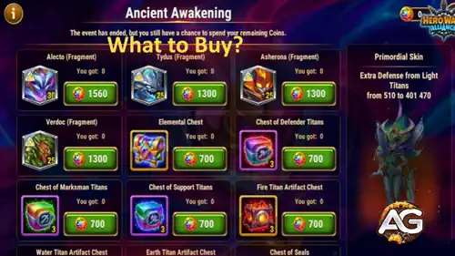

What Is the Ancient Awakening Event?
The Ancient Awakening is a timed event in Hero Wars Alliance where you complete missions and daily tasks to earn a special event currency. That currency is then spent inside the Ancient Awakening Shop, where a very specific and rare item awaits you: Alecto's Primordial Skin.
The event rewards active play — the more missions you complete, the more coins you collect, and the closer you get to unlocking that skin. Don't wait until the last day to start. Spread your effort across the whole event window to make sure you collect enough coins. Every mission counts.

⚠️ The Primordial Skin Is Exclusive — You Cannot Get It Anywhere Else
I know a lot of players treat skins as purely cosmetic. In Hero Wars Alliance, that's not always the case. The Primordial Skin isn't just a visual change — it comes with a real stat bonus that can shift the outcome of battles. Let me explain what it actually does.
What Does Alecto's Primordial Skin Do?
Alecto's Primordial Skin grants her an additional +401,470 Defense against Light Titans. That is a massive defensive boost specifically designed for PvP scenarios where your opponent is running a Light team.
Now, to be transparent with you: this skin is not an absolute top priority for progression in the same way that star levels or artifact upgrades are. If you're a beginner still building your titan team, the stat gain alone won't carry you. But here's why it still matters a lot — especially as you grow:
| Why the Primordial Skin Matters | Details |
|---|---|
| 🔒 Exclusive — no second chance | The only way to get this skin is during this event. Miss it, and it's gone indefinitely. |
| 🛡️ +401,470 Defense vs Light Titans | A significant defensive boost that can change survivability in PvP matches against Light teams. |
| ⚔️ PvP game-changer potential | As your titan levels increase, every extra stat point matters more. This skin compounds in value over time. |
| 📈 Long-term value | The skin grows with Alecto. Players who unlock it now will benefit from it for months and years ahead. |
In competitive PvP, especially in Titan Battles and Guild events, the difference between winning and losing often comes down to small stat margins. A titan that can survive one extra round, absorb one more hit from a Light-element enemy — that's what decides rankings. Alecto with the Primordial Skin can be exactly that difference-maker, and you won't find another opportunity to get it.
Who Is Alecto — And Why Should She Be on Your Team?
If you haven't read my full Alecto Guide, I'd strongly recommend doing that after this article. But here's a quick summary: Alecto is a new Fire Titan with an incredible synergy with Araji, the Super Titan of Fire. Together, they form one of the most powerful offensive combinations for the Fire element team — which also includes Ignis, Vulcan, Asherona, and Moloch.
What makes Alecto special is how her kit amplifies Araji's damage output. She doesn't just fight — she makes the whole Fire team fight better. And since Araji is already one of the strongest titans in the dungeon, adding Alecto creates a combination that dominates both PvP and PvE content. If Araji is your main titan, Alecto isn't optional — she's essential.

What to Buy in the Ancient Awakening Shop — Priority List
This is the part you really came here for. Let me give you my honest priority breakdown for spending your event coins. Remember: the shop has limited items and your coins are finite. Spending on the wrong things means losing progress. Focus is everything.
-
🥇 #1 — Alecto's Primordial Skin (Absolute #1 Priority — No Exceptions)
Everything else in this shop is secondary. I don't care how tempting the other items look — your first and only goal is to collect enough coins to unlock Alecto's Primordial Skin. This is the entire reason you should be participating in this event. It cannot be obtained anywhere else. It has no price tag in any other store. If you run out of coins before getting the skin, you've made a mistake. Plan around it from day one.
Alexandre's tip: Start the event immediately. Don't wait until the last day. Calculate how many coins the skin costs and compare that to how many you can earn per day from missions. If needed, prioritize the missions that give the most coins per effort. The skin is the finish line — everything else is just bonus.
-
 #2 — Alecto Soul Stones
#2 — Alecto Soul Stones
After securing the Primordial Skin, your next priority is Alecto's own Soul Stones. Every Soul Stone you collect brings her closer to Absolute Star (6 stars), which is the level where titans reach their maximum power ceiling. A 6-star Alecto working alongside a high-star Araji creates one of the most devastating Fire combos in the game. Don't sleep on this.
The Ancient Awakening event is one of the best opportunities to stockpile Alecto Soul Stones in large numbers. Use it. The more you collect now, the less you'll have to grind later in daily dungeons and summoning spheres.
-
#3 — Asherona Soul Stones
Asherona is a Fire Titan with direct synergy with Alecto — they belong to the same elemental team and their abilities complement each other in battle. Building Asherona alongside Alecto strengthens the Fire lineup as a whole. If you've already secured Alecto's stones, Asherona is the next best investment for your element team.
-
#4 — Tydus Soul Stones
Tydus is one of the most essential titans for dungeon progression. If you're still building your dungeon team, investing in Tydus is a smart long-term move. He brings survivability and utility that helps your entire team push deeper into dungeon floors — which means more gold, more potions, and more Soul Stones per day. The further you go in the dungeon, the more the game rewards you. Tydus is a core part of reaching those deeper floors.
-
#5 — Verdoc Soul Stones
Verdoc is a titan with an incredibly powerful stun ability. Stun control is one of the most impactful mechanics in Hero Wars Alliance — a well-timed stun can lock down an entire enemy formation before they act. In both PvP and dungeon content, Verdoc's stun can flip the outcome of battles that would otherwise be losses. He's a strong pick for players who want control and disruption in their titan lineup.
-
 #6 — Other Secondary Items (Seals, Spheres, Potions)
#6 — Other Secondary Items (Seals, Spheres, Potions)
Any remaining coins after covering priorities 1 through 5 can go toward secondary items like Chest of Seals, Summoning Spheres, or Titan Potions. These are useful, but none of them have the urgency or exclusivity of the Primordial Skin. Treat them as bonuses, not goals.
A Final Word — Don't Let This One Slip Away
I've seen players regret skipping event shops, and I don't want that to happen to you. The Ancient Awakening isn't just another farming event — it's the only chance you'll have to put the Primordial Skin on Alecto. Once this event ends, that door closes.
Is the skin a game-ending power spike? No, not at your current level if you're a beginner. But Hero Wars Alliance is a long game. The decisions you make today shape how strong you'll be six months from now. A titan that has her exclusive skin fully unlocked, sitting at Absolute Star, surrounded by synergistic teammates like Araji and Asherona — that's a PvP nightmare for your opponents. Build toward that now.
Complete your missions every day. Spend your coins wisely. And don't forget: the skin first, everything else second. See you in the next event guide.